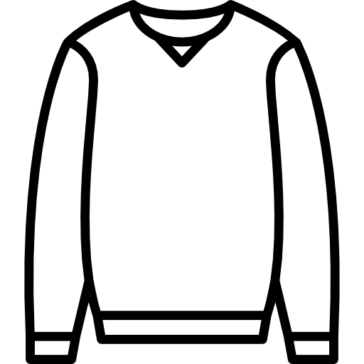

인천시 미추홀구
구름 많음
16°
어제보다 4° 높아요
강수확률 0%
미세먼지 좋음
How about...
얇은 가디건/니트, 맨투맨, 얇은 자켓, 청바지

서대문구
맑음

17°
어제보다 5° 높아요
강수확률 70%! 우산 챙기기!
미세먼지 좋음
How about...
얇은 가디건/니트, 맨투맨, 얇은 자켓, 청바지, ☔, 🌂
오늘의 날씨와 어울리는 옷차림을 알려드립니다